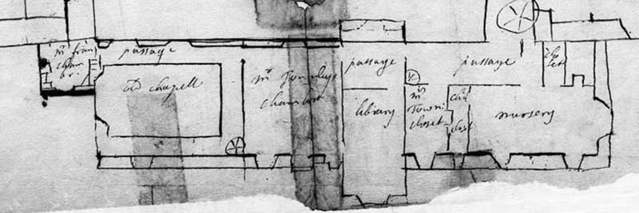

A plan of Towneley from around 1700 shows the library was originally located above the gatehouse, next to the chapel, in the east range.
The east range was taken down sometime around 1711 and the chapel was re-sited on the west corner of the north wing. This date is consistent with the family oral history recorded by the local historian, Thomas Dunham Whitaker in 1800 for his 'History of Whalley'. He wrote "On the north-east side now laid open were two turrets in the angles, a gateway, a chapel and a sacristy, with a library over it. These last were removed by Charles Towneley [1658-1712] about a century ago, and placed with religious reverence in their present situation, the stonework, wainscot, and everything to which the effects of consecration could be supposed to extend, having been preserved entire. All these had been the work of Sir John Towneley [1473-1540]".
The library catalogue dated 1711 was probable created in concert with the removal of the books to the second floor of the north wing. The same serial number was continued after 1711 and it seems that the purpose of the cataloguing method was flexibility to handle the movement of books to new locations. New additions to the library were bound according to the height requirements so that all the books would line up in neatly uniform ranks on the shelves.
Nothing more is known of the Towneley library until 18 October 1803, when Charles Townley (1737-1805) wrote to his uncle, John Towneley (1731-1813), reporting "I have nearly completed a very convenient tribune for the family at the chappel by taking a few feet from the library and opening the pannels which look down into the chappel. . altho' the library will be diminished in point of space & yet more room will be gained to contain books by forming the tribune." [Lancashire Record Office DDTo Acc 2836].
The inventories at Towneley in the first half of the 19th century make no mention of the library or the books, concentrating on the collection of paintings. An inventory of 1871 places a library on the first floor next to the dining room. In this inventory, the room above the chapel, used as a library by Charles Townley, is possibly the room described as "Lady Norrey's Sitting Room".
The books and manuscripts at Towneley were removed to London and sold at auction by Sotheby's in June 1883. All evidence of Charles Townley's library room was destroyed in November 1922, when the remaining bedrooms on the second floor of the north wing were removed to create a watercolour gallery.